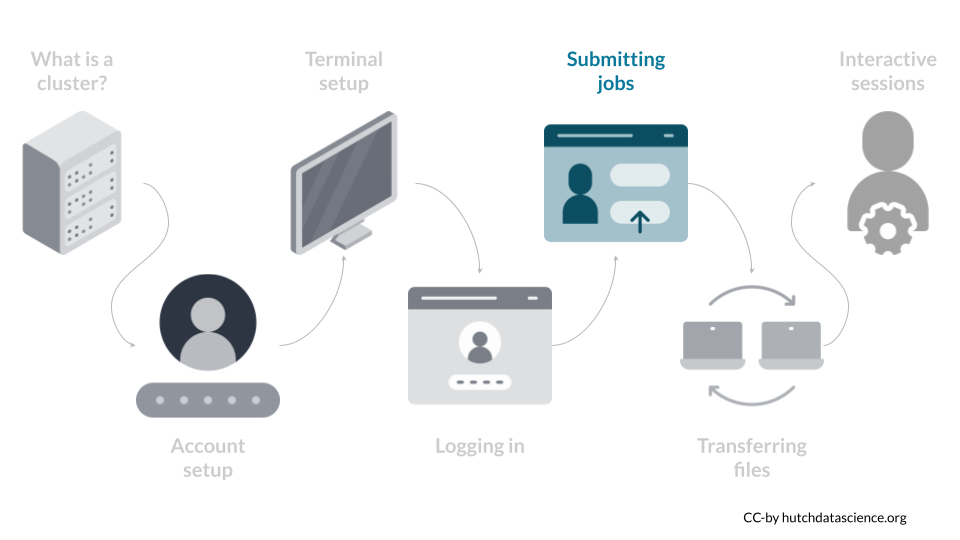

Chapter 7 Custom jobs

Once you are comfortable submitting simple jobs, we point out ways customize your jobs to make best use of the computing infrastructure: perhaps you want to change the number of CPUs or RAM to request, or you want to monitor the status of a job running. This section highlights some common requests people use on the Fred Hutch Slurm system.
7.1 Requesting Specific Computing Resources
By default, when you ran sbatch 01.sh in the previous chapter, sbatch requested for one CPU on a computing node for your task. Let’s change the number of CPUs requested. You can change the number of requested CPUs based on the -c or --cpus-per-task option: if you want to request 4 CPUs for your job, you would enter the following:
sbatch -c 4 01.shor
sbatch --cpus-per-task 4 01.shHow about changing the amount of RAM (memory) requested? Currently, the Fred Hutch Slurm does not have a memory option built in to guarantee the amount of memory that will be allocated to your job. Instead, the current recommendation is to request CPUs as a proxy for RAM allocation, based on this rule-of-thumb:
“If you think your job will need more than 4GB of memory, request one CPU for every 4GB required.”
The technical reasoning behind the rule-of-thumb can be expanded here.
FH Gizmo has class J nodes which each have 24 cores and 384GB of memory, and class K nodes which each have 36 cores and 768GB of memory. So, if you think you will need 100GB of memory for your job, by this rule of thumb you would request 25 cores. You would be assigned to a class K node, and you would occupy 25/36 cores on that node. On this node, other users can use the remaining 11 cores. You would share the 768GB of memory all together and hope that the other users don’t take up more memory than you need: the more cores you occupy on a node, less users will compete for memory. It’s an imprecise system and SciComp has interest to make memory allocation more precise in the future.
You can learn more about other use cases of sbatch at the Biomedical Data Science Wiki’s page on computing jobs.
7.1.1 Saving your sbatch options
The options you pick for the sbatch command, especially around CPU and RAM requests, can have enormous impact on your computing speed and quality. Therefore, it is often a good idea to save the options you have picked into the shell script itself. Suppose that you launched your job like this:
sbatch -c 4 01.shTo save the -c 4 option in your script 01.sh, you can add the following header #SBATCH -c 4 to your script:
#!/bin/bash
#SBATCH -c 4
echo "Hello, World!"Now, you will automatically request 4 CPUs when you run:
sbatch 01.sh7.2 Monitoring and Ending Jobs
Often, our jobs take time to run, and we want to see the status of our jobs. You can examine the status of your job via the squeue command. The default option will show all jobs running on the cluster, including other users, so it’s common to use the -u option to specify the user. The example user here is clo2:
squeue -u clo2
JOBID PARTITION NAME USER ST TIME NODES NODELIST(REASON)
36277207 campus-ne HelloWor clo2 PD 0:00 1 (Priority)Alternatively, you can also use --me to specify the user as yourself:
squeue --me
JOBID PARTITION NAME USER ST TIME NODES NODELIST(REASON)
36277207 campus-ne HelloWor clo2 PD 0:00 1 (Priority)Here, the status (“ST”) shows PD, which means that the job hasn’t started to run yet. When it is running the status will be R.
Some common reasons for PD include: there are no available resources left for the requested resources for your job, or that your account has already maxed out its allocated resources. The decision of which user’s jobs are running is based on the Slurm scheduler system. You can learn more about squeue’s outputs at the Biomedical Data Science wiki’s page here.
If you want to end a job that is either waiting (PD status) or running, you can enter:
scancel [job id]where [job id] is a numerical ID attached to your unique job. It can be found under JOBID when you run squeue.
sbatch -c 4 filename.sh
This command submits a job to the cluster with instructions specified in a .sh file with request of 4 cores.
squeue --me
This command prints the job submission status for your username.
scancel 1234
This command cancels job ID 1234. The job ID can be found in the squeue command.